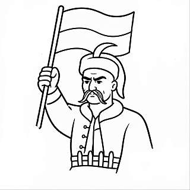

04 / Козацький образ
Прапор
у русі
Анімована ілюстрація козака з прапором — невеликий візуальний додаток до історії козацької доби.

Козацька символіка
Прапор як знак спільноти
У центрі анімації — козак, який тримає прапор. Цей образ нагадує про козацьке військо, де прапори слугували знаками підрозділів і допомагали вирізняти їх під час походів. Лаконічний малюнок поєднує постать козака та символ спільноти, за яку він виступає.